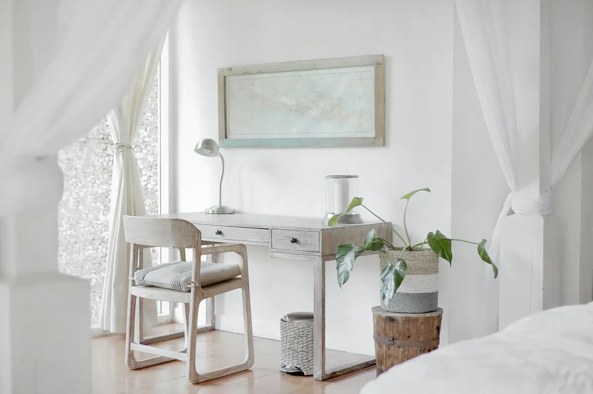

La discrétion
Aucun panneau « vendu » chez nous. Près d'une vente sur deux ne paraît jamais en vitrine, et aucune adresse n'est publiée sans accord écrit du propriétaire.
L'agence
Depuis seize ans, Prestige Habitat cultive un art rare sur la Riviera : celui de vendre très cher, très vite, et très discrètement.
Notre histoire
En 2009, Valentine Delacroix quitte Paris et une carrière de commissaire-priseur associée pour s'installer à Cannes avec une idée fixe : les plus belles maisons de la Riviera méritaient mieux que des annonces anonymes. Le premier mandat — une villa Belle Époque de la Californie — se vend en onze jours, sans publicité, à un collectionneur milanais.
Quinze ans plus tard, la maison compte neuf salariés, un bureau de la Croisette dessiné par un architecte niçois, et un carnet d'adresses qui s'étend de Genève à Singapour. Nous restons volontairement petits : chaque propriété est suivie par un conseiller qui la connaît pierre par pierre.

Étapes
Premier bureau rue d'Antibes, trois personnes, sept mandats la première année — tous vendus.
Création du pôle saisonnier et de la conciergerie privée. Les villas du catalogue sont complètes dès avril.
Installation au 27 boulevard de la Croisette et ouverture du desk international.
Une équipe interne pour l'entretien et la gestion locative annuelle : la maison devient une adresse à vie.
Ouverture du secteur Théoule–Estérel et recrutement d'Antoine Louïse, enfant du pays.
Le cumul des transactions accompagnées franchit le cap du milliard et demi d'euros.
Nos valeurs
Aucun panneau « vendu » chez nous. Près d'une vente sur deux ne paraît jamais en vitrine, et aucune adresse n'est publiée sans accord écrit du propriétaire.
Un mandat refusé sur cinq : nous ne représentons que des biens que nous signerions pour nous-mêmes. Chaque dossier est vérifié juridiquement avant publication.
Notre relation ne s'arrête pas à la signature : gestion, travaux, revente. Soixante-huit pour cent de nos ventes se font par recommandation.
L'équipe
Salariés, jamais prestataires indépendants : nos conseillers ne sont payés qu'une fois votre projet réussi — et n'ont aucune pression de volume.
Directrice fondatrice
Diplômée de Sciences Po et titulaire d'un MBA à l'ESSEC, Valentine a dirigé pendant douze ans le département « propriétés privées » d'une maison aux enchères parisienne avant de fonder Prestige Habitat en 2009. Elle supervise chaque mandat et cultive un réseau de clients sur trois continents.
Français, anglais, italien — Propriétés d'exception · Ventes confidentielles
Directeur des ventes
Ancien associé d'un cabinet d'expertise immobilière de la Croisette, Gabriel connaît le marché cannois immeuble par immeuble. Négociateur hors pair, il accompagne les acquéreurs de la première visite jusqu'à la signature chez le notaire.
Français, anglais — Villas · Négociation
Responsable location saisonnière
Passée par le conciergerie de luxe d'un palace de la Croisette, Isaure orchestre les locations d'été les plus exigeantes : arrivées privées, personnels de maison, services sur mesure. Ses propriétés sont complètes chaque saison, souvent réservées d'une année sur l'autre.
Français, anglais, espagnol — Locations d'été · Conciergerie
Conseiller acquisitions internationales
Formé à la London School of Economics, Thomas a débuté dans une foncière à Mayfair avant de rejoindre la Riviera. Il conseille les investisseurs internationaux sur la structuration de leurs acquisitions et les spécificités fiscales d'un achat en France.
Français, anglais, japonais — Clientèle internationale · Investissement
Responsable gestion locative
Experte en copropriété et en gestion de patrimoine bâti, Camille suit l'entretien, les assurances et les locations à l'année d'une soixantaine de résidences entre Cannes et l'Estérel. Une rigueur d'administrateur et un sens du détail que les propriétaires saluent unanimement.
Français, anglais — Gestion locative · Copropriété
Conseiller estuaires & Estérel
Enfant du pays, né à Théoule-sur-Mer, Antoine couvre la corniche de l'Estérel et les collines de l'arrière-pays. Il trouve les propriétés qui n'apparaissent jamais en vitrine — et il connaît chaque calanque accessible depuis un jardin.
Français, anglais — Estérel · Biens hors marché
Un café, une conversation, aucune obligation. C'est ainsi que commencent nos plus belles collaborations.